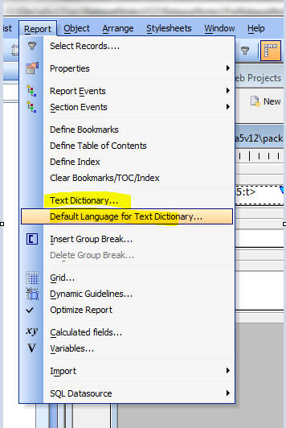

This document describes the updates and fixes made to Alpha Anywhere since its initial release.
To see the 'What's New in V12' document (which describes all of the new features in Alpha Anywhere's initial release) please click here.
Please note that Alpha Anywhere patches are only available to users with
a current subscription.
You can verify your subscription status from within Alpha Anywhere by
going to Help, About, or by clicking this link shown here (https://activation.alphasoftware.com/subscriptionStatus.aspx).
If you install an update for which your subscription is not entitled,
you will need to uninstall the update and rollback to an older version
that you are authorized to use in order to continue using Alpha
Anywhere.
In addition to the official updates that Alpha Software makes available from time to time (which are described in this document), we also make available our internal pre-release builds that allow you to see what features have been added and what bugs have been fixed since the last official update. The features and bug fixes in the pre-release build will be part of the next official update. To see the pre-release notes, please click here.
IMPORTANT: If you currently have build 1620-4172 from 21 Aug 2013 or an earlier build installed, then this is a required update.
Tabbed UI - Print Reports - HTML - If your Tabbed UI has any buttons that print reports with the initial view set to HTML then you will need to recalculate the button that opens the report. To do this, edit the Tabbed UI component, then click the Menu button and select 'Recalculate all controls'. If you don't recalculate the button, you will get this error when you try to print the report: 'phtm.pdfOptions not found'. - WAS FIXED IN NEXT BUILD (ind build page deleted)
| UX and Grid Component | Accordion Control - Changing the Background Color of the Pane Selector |
When you define the properties of an Accordion
control you can specify class names to apply to
the Title Band when the band is opened, closed,
or disabled. This can be used to change the
appearance of the title band depending on its
state. In this video we show how the background color and font title of the title band can be dynamically controlled through custom CSS classes. Watch Video |
Reports - Session Variables - Calculated fields that referenced Session variables were not displaying the value of session variable.
UX Component - Server-side Action Scripting - Send Email Action - If you specified that the e-mail body should be read from the repository table, and that the name of the item in the repository was based on a field in the UX (rather than a hard coded name), the action did not retrieve the entry in the repository correctly.
Web Component - Styles - Global Styles - If you used the Style Editor to create a new global style, the global style folder was not in the correct location. It was placed in a folder called 'Shared Resources' in the current Project. It should have been one folder up in the .WebProjects (plural) folder.
Grid Component - Detail View - Edit On Demand - Date Picker, Edit-Combo, Auto-suggest - Did not work if the Detail View as set to 'Edit on Demand' mode.
sql_lookup() Function - The function will
now accept a blank filter expression and return all
values. Previously, if the "result_Expression" in the
function was a comma delimited list of fields, the
function would return only the first field in the list
for the first record found if the option "flagReturnAllValues"
was false. It now returns all fields listed in "result_Expression"
for the first record found when "flagReturnAllValues" is
false.
The function now has an optional parameter for a column
delimiter that is only added between fields if the
expression is a comma delimited field list. The default
column delimiter is a tab.
IMPORTANT: If sql_lookup() specifies a filter and returns a single field in the return expression, the return value is correctly typed. If more than one value is returned, or no filter is specified, the return value is a character string.
sql_records_get() Function - Now allows a blank
filter expression which will return all records.
UX Component - Client-Side Calculated Fields - In certain cases Javascript rounding errors in math calculations were causing wrong values to be displayed.
Application Server - Report Server - Multiple Application Servers - If you were running multiple instances of the Application Server on a machine, the Report Server did not work correctly.
Reports - Web Applications - Reports - Report Server - If a SQL connection string contained high order characters, it could cause the report to fail.
Forms - Desktop Applications - Web Content Chrome - The Toolbox now has a new item 'Web Content Chrome'. This controls duplicates the functionality of the 'Web Content' control, but uses Chrome and not Internet Explorer to render the content. For example, you can use this control to render Google Maps on the form.
Forms - Desktop Applications - Google Maps Supercontrol - Fixes issues with this control. You now can create a Google Map supercontrol on a form using either the 'Web Content' control (uses Internet Explorer) or 'Web Content Chrome' (uses Chrome).
UX Component - Client-side Calculated Fields - Round() Function - The round() function in client-side calculated fields was using the built-inJavascript Math.round() method to round values. The Javascript Math.round() function rounds negative numbers differently that some people might expect (and differently than Excel does, for example).
For example:
Math.round(-4.5,0) returns -4
However, Excel returns -5.
To be consistent with Excel's behavior (which is likely what most users would expect), when the Round() function is used in a client-side calculation, it now uses the Excel convention.
Behind the scenes, the round() function in a client-side calculation is actually translated into the built-in $u.n.round() function in the Alpha Anywhere Javascript library. This function now takes these optional flags
For example:
$u.n.round(4.25,1)= 4.3
$u.n.round(-4.25,1) = -4.3
$u.n.round(4.25,1,'u') = 4.3
$u.n.round(-4.25,1,'u') = -4.2
$u.n.round(4.25,1,'d') = 4.2
$u.n.round(-4.25,1,'d') = -4.3
$u.n.round(4.25,1,'a') = 4.3
$u.n.round(-4.25,1,'a') = -4.3
$u.n.round(4.25,1,'t') = 4.2
$u.n.round(-4.25,1,'t') = -4.2
UX Component - List Control Performance - The way in which events are bound to List controls elements has been improved. This will result in a improvement in performance when doing an orientation change on the device and switching to a different List layout based on the orientation.
Reports - Layout Table Reports - Project Reports - Text Dictionary - You can now insert text dictionary tags in Layout Table reports defined at the Project level. Workspace reports do not support Text Dictioanries.
For example, you can specify the title of a column in a Layout Table report as
When the report is printed, the text dictionary tags are resolved.
NOTE: To define the Text Dictionary, go to the Project Properties dialog on the Web Control Panel.
To define entries in the Text Dictionary, select the Text Dictionary... command from the Report menu in the Layout Table Report Editor.

When you preview your report, you can specify which Language you want to use by selecting the 'Default Language for Text Dictionary...' command on the Report menu.

When you define a Layout Table report, the Cell Contents dialog allows you to edit the contents of a cell in the Layout Table. If you want to use Text Dictionary tags on some static text, you must check the 'Is Template' checkbox as shown below.
When you click the 'Is Template' checkbox, then
Mobile Theme - Slate - A updated version of the new Slate stylesheet is ready for testing.
To download the style click here. Unzip the file into the CSS folder where you have Alpha Anywhere installed. This will create a new folder called Slate in the CSS folder. To use the style, edit a UX component, and then change the style name for the component to 'Slate'.
NOTE: See Release Notes for more information on the Slate stylesheet.
Grid Component - Query By Example Searches - The search performed by the QBE search feature is now case-insensitive on databases that are normally case sensitive.
You can disable this feature by setting this property in the Grid's Advanced Properties section:
tmpl.qbeSearchIsCaseInsensitive = .f.
Grid Component - Alphabet Button Search - Case-insensitive Searches - The search performed by the Alphabet Button search feature is now case-insensitive on databases that are normally case sensitive. To see this change you must make the Grid dirty and then resave it.
UX and Layout Table Report - AbsoluteLayout Editor - The AbsoluteLayout editor is now based on an embedded version of the Chrome Browser. Previous versions were based on the Internet Explorer ActiveX control. However, as a result of some very unfortunate changes that Microsoft apparently made to IE11 (which comes standard on Windows 8.1), the AbsoluteLayout editor did not work correctly on machines where IE11 was installed. Now that the AbsoluteLayout Editor is based on an embedded version of Chrome, there is no dependency on Internet Explorer and no risk that a future update to IE will break some aspect of the AbsoluteLayout editor.
Grid - Search Part - Setting Initial Value of a Checkbox Control - Multiple Values - The Search Part allows you to define the initial value of each control in the Search Part. However, in the case of a multi-valued controls, such as a Checkbox control, you might want to set the initial value of the control to two or more checked values. You can do this by specifying some Javascript in the client-side onSearchRender event. Use the .setValue() method and pass in an array of the initial selections. For example:
{grid.object}.setValue('S','COLOR',['Red','Green']);